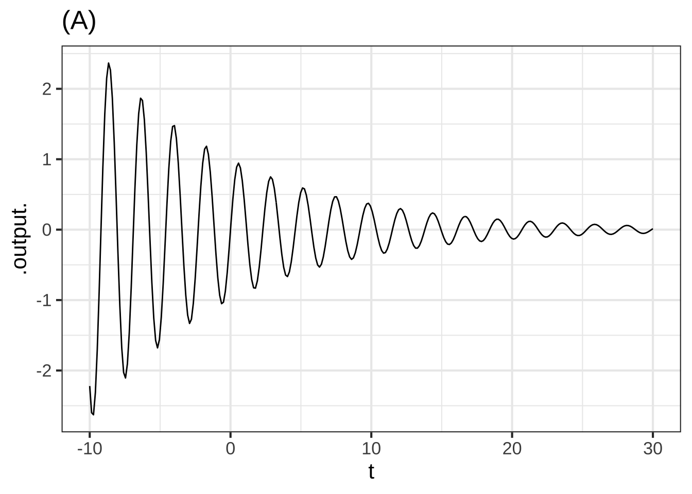
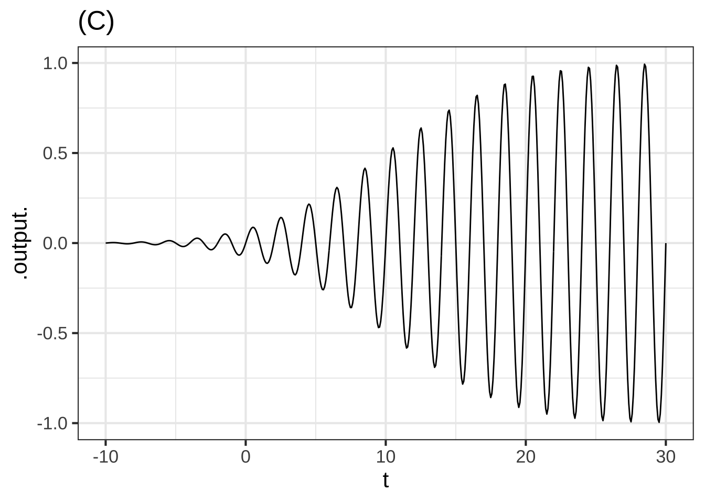

Chapter 11 Assembling functions
When we need a new function for some purpose, we practically always build it out of existing functions. For instance, a parameterized function like \[A \sin\left(\frac{2 \pi}{P}x\right) + C\] is built by assempling together a straight-line input scaling, a pattern-book \(\sin()\) function, and another straight-line function for scaling the output from \(\sin()\).  1300
1300
In this chapter, we’ll introduce three general frameworks for combining functions: linear combination, composition, and multiplication.
11.1 Linear combination
One of the most widely used sorts of combination is called a linear combination. The mathematics of linear combination is, it happens, at the core of the use of math in applications, whether that be constructing a Google-like search engine or analyzing medical data to see if a treatment has a positive effect.
You’ve worked for many years with one kind of linear combination: polynomials. No doubt you’ve seen functions17 like \[f(x) \equiv 3 x^2 + 5 x - 2\]
There are three pattern-book functions in this polynomial. In this case, as in polynomials generally, they are all power-law functions: \(g_0(x) \equiv 1\), \(g_1(x) \equiv x\), and \(g_2(x) \equiv x^2\). With these functions defined, we can write the polynomial \(f(x)\) as \[f(x) \equiv 3 g_2(x) + 5 g_1(x) - 2 g_0(x)\] Each of the functions is being scaled by a quantity—3, 5, and -2 in this example—and the scaled functions are added up. That’s a linear combination; scale and add. (Later, we’ll see that the scalars generally come with units. So we might well have a metric polynomial and an equivalent traditional-unit polynomial. Just wait.)
There are other places where you have seen linear combinations:
- The parameterized sinusoid \[A \sin\left(\frac{2 \pi}{P}t\right) + C\] is a linear combination of the functions \(h_1(t) \equiv \sin\left(\frac{2 \pi}{P} t\right)\) and \(g_0(t) \equiv 1\). The scalars are \(A\) and \(C\).
- The parameterized exponential \[A e^{kt} + C\] The functions being combined are \(e^{kt}\) and \(1\). The scalars are, again, \(A\) and \(C\).
- The straight line function \(a x + b\). The functions being combined are \(x\) and \(1\), the scalars are \(a\) and \(b\). 1310
Note that neither the parameterized exponential or the parameterized sinusoid is a polynomial.
There are a few reasons for us to be introducing linear combinations here.
- You will see linear combinations everywhere once you know to look for them.
- There is a highly refined mathematical theory of linear combinations that gives us powerful ways to think about them as well as computer software that can quickly find the best scalars to use to match input-output data.
- The concept of linear combination generalizes the simple idea that we have been calling “scaling the output.” From now on, we’ll use the linear-combination terminology and avoid the narrower idea of “scaling the output.”
- Many physical systems are described by linear combinations. For instance, the motion of a vibrating molecule or a helicopter in flight or a building shaken by an earthquake are described in terms of simple “modes” which are linearly combined to make up the entire motion. More down to Earth, the timbre of a musical instrument is set by the scalars in a linear combination of pure tones.
- Many modeling tasks can be put into the framework of choosing an appropriate set of simple functions to combine and then figuring out the best scalars to use in the combination. (Generally, the computer does the figuring.)
11.2 Function composition
To compose two functions, \(f(x)\) and \(g(x)\), means to apply one of the functions to the output of the other. “\(f()\) composed with \(g()\)” means \(f(g(x))\). This is generally very different from “\(g()\) composed with \(f()\)” which means \(g(f(x))\).
For instance, suppose you have recorded the outdoor temperature over the course of a day and packaged this into a function \(\text{AirTemp}(t)\): temperature as a function of time \(t\). Your digital thermometer uses degrees Celsius, but you want the output units to be degrees Kelvin. The conversion function is \[\text{CtoK}(C) \equiv C + 273.15\] Notice that CtoK() takes temperature as input. With this, we can write the “Kelvin as a function of time” as \[\text{CtoK}\left(\text{AirTemp}(t)\right)\] It’s important to distinguish the above time \(\rightarrow\) Kelvin function from something that looks very much the same but is utterly different: \(\text{AirTemp}\left(\text{CtoK}(C)\right)\). In the first, the input is time. In the second, it is temperature in celsius.
Here is a simple, approximate formula for the length of day (in hours) as a function of latitude \(L\) and the declination angle \(\delta\) of the sun.
\[\text{day_length}(L, \delta) \equiv \frac{2}{15} \arccos\left(-\tan(L)*\tan(\delta)\right)\] The declination angle is the latitude of the point on the earth’s surface pierced by an imagined line connecting the centers of the earth and the sun. On the summer solstice, the longest day of the year, it is \(23.44^\circ\).
A computer implementation must look different, since \(L\) and \(\delta\) are typically provided in degrees while the tan() and other trigonometric functions in most computer languages expect units of radians. The conversion is easy: \(\text{deg2rad}(d) \equiv \frac{\pi}{180} d\). The conversion the other way is \(\text{rad2deg}(r) \equiv \frac{180}{\pi} r\).
In order to get the day-length formula to work in a computer, we can compose the \(\tan()\) function with deg2rad(). The output of acos() is in radians, so we have to convert it back to degrees. Like this:
day_length <- makeFun(
(2/15)*rad2deg(
acos(
-tan(deg2rad(L))*tan(deg2rad(d))
)
) ~ L & d)Now to make a plot of day length as a function of day of the year. Of course, day_length(L, d) does not take day of the year into account. What’s missing is to know the declination of the sun as a function of calendar day.
The input is a number \(n\) that runs from 0 at the start of January 1st to 365 at the end of December 31. In terms of this input, the declination of the sun is known to be approximately
delta_sun <- makeFun(-23.44*cos((2*pi/365)*(n+10) ) ~ n)Composing day_length() with delta_sun() (on the d argument only), and setting the latitude to be, say, \(39^\circ\)N, we get a function of day of year n:
slice_plot(
day_length(39, delta_sun(n)) ~ n,
domain(n=c(0,365))
)
Income inequality is a matter of perennial political debate. In the US, most people support Social Security, which is an income re-distribution programming dating back almost a century. But other re-distribution policies are controversial. Some believe they are essential to a healthy society, others that the “cure” is worse than the “disease.” 1330
Whatever one’s views, it’s helpful to have a way to quantify inequality. There are many ways that this might be done. A mathematically sophisticated one is called the Gini coefficient.
Imagine that society was divided statistically into income groups, from poorest to richest. Each of these income groups consists of a fraction of the population and has, in aggregate, a fraction of the national income. Poor people tend to be many in number but to have a very small fraction of income. Wealthy people are few in number, but have a large fraction of income. The table shows data for US households in 2009:18
| group label | population | aggregate income | cumulative income |
|---|---|---|---|
| poorest | 20% | 3.4% | 3.4% |
| low-middle | 20% | 8.6% | 12.0% |
| middle | 20% | 14.6% | 26.6% |
| high-middle | 20% | 23.2% | 47.8% |
| richest | 20% | 50.2% | 100.0% |
The cumulative income shows the fraction of income of all the people in that group or poorer. The cumulative population adds up the population fraction in that row and previous rows. So, a cumulative population of 60% means “the poorest 60% of the population” which, as the table shows, earn as a group 14.6% of the total income for the whole population.
A function that relates the cumulative population to the cumulative income is called a Lorenz function. The data are graphed in Figure 11.1 and available as the US_income data frame in the SANDBOX. Later, in Figure 11.2, we’ll fit parameterized functions to the data.

Figure 11.1: Data on household incomes in the US in 2009.
Lorenz curves must:
- Be concave up, which amounts to saying that the curve gets steeper and steeper as the population percentile increases. (Why? Because at any point, poorer people are to the left and richer to the right.)
- Connect (0,0) to (1, 1).
Calling the income percentile \(L\) a function of the population percentile \(p\), a Lorenz function is \(L(p)\) that satisfies the requirements in the previous paragraph. Here are some functions that meet the requirements:
- \(L_b(p) \equiv p^b\) where \(1 \leq b\).
- \(L_q(p) \equiv 1 - (1-p)^q\) where \(0 < q \leq 1\)
Notice that each of these functions has just one parameter. It seems implausible that the workings of a complex society can be summarized with just one number. We can use the curve-polishing techniques that will be introduced in Section 14 to find the “best” parameter value to match the data. 1340
Lb <- fitModel(income ~ pop^b, data = Income, start=list(b=1.5))
Lq <- fitModel(income ~ 1 - (1-pop)^q, data = Income, start=list(q=0.5))Figure 11.2: Lorenz curves \(L_b(p)\) (blue) and \(L_q(p)\) (magenta) fitted to the household income data.
Neither form \(L_b(p)\) or \(L_q(p)\) gives a compelling description of the data. Where should we go from here?
We can provide more parameters by constructing more complicated Lorenz functions. Here are two ways to build a new Lorenz function out of an existing one:
- The product of any two Lorenz functions, \(L_1(p) L_2(p)\) is itself a Lorenz function.
- A linear combination of any two Lorenz functions, \(a L_1(p) + (1-a) L_2(p)\), so long as the scalars add up to 1, is itself a Lorenz function. For instance, the magenta curve in Figure 11.2 is the linear combination of 0.45 times the tan curve plus 0.55 times the blue curve.
Question: Is the composition of two Lorenz functions a Lorenz function? That is, does the composition meet the two requirements for being a Lorenz function?
To get started, figure out whether or not \(L_1(L_2(0)) = 0\) and \(L_1(L_2(1)) = 1\). If the answer is yes, then we need to find a way to compute the concavity of a Lorenz function to determine if the composition will always be concave up. We’ll need additional tools for this. We’ll introduce these in Block 2.
11.3 The modeling polynomial
Sometimes, in order to model some simple relationship you need to build a function whose graph has a simple, curving shape. 1350
A simple but surprisingly powerful approach is to use a low-order polynomial. The order of a polynomial is the highest exponent on the input. For example:
- A straight-line function, \(g_1(x) \equiv a_0 + a_1 x\), is a first-order polynomial.
- A quadratic, \(g_2(x) \equiv b_0 + b_1 x + b_2 x^2\) is a second-order polynomial.
Many modelers are tempted to extend the technique to third-, fourth-, fifth-order and even higher. This is only rarely worthwhile since all second-, fourth-, sixth- and higher-even-order monomials have basically the same U-shape, like a referee signalling a touch-down. Similarly, first-, third-, fifth- and higher odd-order monomial have similar  shapes.
shapes.
An ofttimes better approach is to compose the polynomial with a curved but monotonic function, such as a logarithm.
Notice that in writing low-order polynomials like \[g_1(x) \equiv a_0 + a_1 x\] or \[g_2(x) \equiv b_0 + b_1 x + b_2 x^2\] we are using a specific naming convention for the scalars in the linear combinations. For each different function, we use a different start-of-the-alphabet name, like \(a\) and \(b\). That same name is used for all the scalars in the function, and a subscript is used to make the distinction between the different functions being combined. Thus, we have \(a_1\) for the \(x\) function in \(g_1()\) and \(b_2\) for the \(x^2\) function in \(g_2()\).
In high-school mathematics, polynomials are often written without subscript, for instance \(a x^2 + b x + c\). This can be fine when working with only one polynomial at a time, but in modeling we often need to compare multiple, related polynomials.
11.4 Function multiplication
The third in our repertoire of methods for making new function out of old is plain old multiplication. With two functions \(f(x)\) and \(g(x)\), the product is simply \(f(x)g(x)\).
It’s essential to distinguish between function multiplication and function composition:
\[\underbrace{f(x) g(x)}_\text{multiplication}\ \ \ \ \underbrace{f(g(x)) \ \ \text{or}\ \ \ g(f(x))}_\text{composition}\]
In function composition, only one of the functions—the interior function is applied to the overall input, \(x\) in the above example. The exterior function is fed its input from the output of the interior function.
In multiplication, each of the functions is applied to the input individually. Then their outputs are multiplied to produce the overall output.
In function composition, the order of the functions matters: \(f(g(x))\) and \(g(f(x))\) are in general completely different functions.
In function multiplication, the order doesn’t matter because multiplication is commutative, that is, if \(a\) and \(b\) are each quantities, \(a \times b = b \times a\). 1360
Transient vibration
A guitar string is plucked to produce a note. The sound is, of course, vibrations of the air created by vibrations of the string.
After plucking, the note fades away. An important model of this is a sinusoid (of the correct period to correspond to the frequency of the note) times an exponential.
Function multiplication is used so often in modeling that you’ll see it in many modeling situations. Here’s one example that is important in physics and communication: the wave packet. Overall, the wave packet is a localized oscillation as in Figure 11.3.
Figure 11.3: A wave packet constructed by multiplying a sinusoid and a gaussian function.
This is the product of two simple functions: a gaussian times a sinusoid.
Figure 11.4: The two components of the wave packet in Figure 11.3
Each simple function such as a gaussian, a sigmoid, a straight-line function, or a sinusoid can be likened to a character in a story. For instance, a sinusoid with a period of 10 seconds and an amplitude of 5 feet might be sufficient for the purpose of describing the shaking encountered during an earthquake. A sigmoid might be a good description of the uptake of a successful social media platform such as Facebook.
But not every social media firm succeeds and you may need two or more characters to express the drama: the rising young firm and the rapid fall in popularity when competition provides a better alternative.
For instance, the initial rise in popularity of the social media platform Yik Yak was exponential. Then popularity leveled off, promising a steady, if static, business into the future. But, the internet being what it is, popularity collapsed to near zero and the company closed.
On way to model this pattern is by multiplying a sigmoid by an exponential.(See Figure 11.5.)
yikyak <- makeFun(pnorm(year, mean=2014.5, sd=0.7) * exp(- (year-2014)) ~ year)
slice_plot(yikyak(year) ~ year, domain(year=c(2010,2018)))Figure 11.5: Subscriptions to the web messaging service Yik Yak grew exponentially in 2013 and 2014, then collapsed. The company closed in 2017.
11.5 All together now!
Two or all three of the techniques for combining functions—linear combinations, function composition, and function multiplication—can be used in the same function. 1370
Consider the function for the length of the day \[\text{day_length}(L, \delta) \equiv \frac{2}{15} \arccos\left(-\tan(L)*\tan(\delta)\right)\] The 2/15 is scaling the output of \(\arccos()\). The \(\arccos()\) is being composed with an interior function that is itself a scaled product of two functions.
11.6 Exercises
Exercise 11.1: JWUVA
The graph shows two gaussian functions, \(g_1(t)\) and \(g_2(t)\)

A linear combination of the gaussian functions is shown in Graph (A).

Question A What is the linear combination of \(g_1(t)\) and \(g_2(t)\) shown in Graph (A)?
- \(0.5\,g_1(t) + g_2(t)\)Good.
- \(g_1(t) + 0.25\,g_2(t)\)︎✘ If this were the case, the right bump would be only one-quarter as big as the left bump.
- \(g_1(t) + 2\,g_2(t)\)︎✘ Since \(g_2(t)\) has a maximum value of 20, \(2\,g_2(t)\) would reach a value of 40. That isn’t what’s shown in the graph.
Another linear combination of the gaussian functions is shown in Graph (B).

Question B Which linear combination of \(g_1(t)\) and \(g_2(t)\) is shown in Graph (B)?
- \(g_1(t) - 2\, g_2(t)\)Good.
- \(g_1(t) - g_2(t)\)︎✘ The second (downward) gaussian hump is bigger than the first (upward) gaussian hump.
- \(0.5\,g_1(t) - 0.5\, g_2(t)\)︎✘ If this were so, the second gaussian hump would reach a value of -4 rather than the -8 seen in Graph (B).
- \(-g_1(t) - g_2(t)\)︎✘ The first gaussian hump is positive.
Exercise 11.2: AVNOW

The graph shows a function that is a linear combination of three x-shifted gaussian functions \[a_1 \dnorm(x-3.5) + a_2 \dnorm(x-0.5) + a_3 \dnorm(x-(-4))\]
Question A Estimate the scalars \(a_1, a_2\), and \(a_3\) for the function drawn in Plot (A). (Be sure to get the order right!)
- \(a_1 = 0.3, a_2 = 0.15, a_3=0.2\)Right!
- \(a_1 = 0.15, a_2 = 0.2, a_3=0.3\)︎✘
- \(a_1 = 0.2, a_2 = 0.3, a_3=0.15\)︎✘
- \(a_1 = 0.15, a_2 = 0.3, a_3=0.2\)︎✘

Plot (B) shows a function that is a linear combination of four x-shifted sigmoid functions. Each the multiplicative scalars is either 1 or \(-1\). Recall that a handy fiducial point for the sigmoid function is the input at which the output is 1/2.
Question B Where are the fiducial points for the four sigmoids?
\(-8, -2, 3, 7\)\(\heartsuit\ \) \(-6, -4, 0, 6\)︎✘ \(-9, -8, 1, 5\)︎✘ \(-2, 2, 4, 6\)︎✘
Question C What are the scalar multipliers on each sigmoid, in order from the leftmost to rightmost?
\(1, -1, 1, -1\)\(\heartsuit\ \) \(1, -1, -1, 1\)︎✘ \(-1, 1, 1, -1\)︎✘ \(-1, 1, -1, 1\)︎✘
Exercise 11.3: FISHU
According to data from the US National Health and Nutrition Evaluation Survey, the average height of adult females is 157 cm vs 167 for adult males. The standard deviations are 17 cm and 22 cm respectively. A good model for the person-to-person variation for females is dnorm(height, mean = 157, sd = 17) and similarly for males.
To see the overall distribution of adult height, regardless of sex, make a linear combination of the distribution for females and for males, giving each a scalar of one-half (since the population is roughly 50-50 female/male).
Open a SANDBOX and construct the linear combination function for the overall distribution. Use the scaffolding to plot out the distributions for the individual sexes and the overall distribution.
female <- makeFun(dnorm(height, mean = 157, sd=17) ~ height)
male <- makeFun(dnorm(height, mean = 167, sd=22) ~ height)
# fill in the blanks in the next line
overall <- makeFun( _your_scalar_f_ * female(height) + _your_scalar_m_ * male(height) ~ height)
slice_plot(female(height) ~ height, domain(height=c(100,220)), color="orange3",
label_x=.5, label_text="F") %>%
slice_plot(male(height) ~ height, color="dodgerblue", label_text="M", label_x=.8) %>%
slice_plot(overall(height) ~ height, color="black", size=2)Some people erroneously think that since the mean height of men is larger than women by 10cm, you can readily distinguish between the sexes based on height. However, notice that the overall distribution (plotted in black) does not show a dip between the sexes: there is no clear separation based on height.
As a thought experiment, let’s increase the separation in mean height from the actual value of \(167-157=10\) cm to something larger. You can increase the separation by 5 cm, for example, by making the men’s mean height 167+5.
Question A What’s the smallest increase in separation (in cm) that produces a barely visible dip between the sexes in the overall height distribution?
5︎✘ 10︎✘ 15︎✘ 20︎✘ 25︎✘ 30\(\heartsuit\ \)
Exercise 11.5: fmwTFj
Question A How long is the day on April Fools (\(n=90\)) at Latitude 39\(^\circ\)N? (Use a sandbox for the calculation.)
12.38 hours\(\heartsuit\ \) 12.59 hours︎✘ 12.64 hours︎✘ 12.74 hours︎✘
Exercise 11.6: LPhyTb
The graph shows (in black) a function constructed as the product of two basic modeling functions. The graph also shows a pair of blue curves that encompass the black function. These are called the envelope of the black function.

Question A What are the two basic modeling functions being multiplied?
- A sinusoid and another sinusoid with a faster period.Excellent!
- A gaussian and a sinusoid.︎✘
- A sigmoidal function and a sinusoid.︎✘
Question B What is the period of the envelope?
- 10︎✘ It’s true that the broad peaks in the overall function occur every 10 time units. But a sine wave has two excursions from zero every cycle, one positive and one negative. So if the period of the envelope were 10, we would see an amplitude of the faster sinusoid near zero every 5 time units.
- 20Correct.
- 30︎✘ If this were so, the dips in amplitude of the faster sign would occur every 15 time units.
Exercise 11.7: LDKKVA
Being able to add or multiply functions can enable us to tell a somewhat complicated story. For example, the graph shows a simple model of the hourly temperature in from June through September
temp <- makeFun(20*cos(2*pi*(t-120)/365) +
10*sin(2*pi*t/1) + 50 ~ t)
slice_plot(temp(day) ~ day, domain(day=c(90, 180)), npt=1000) %>%
gf_labs(y = "Temperature (F)", x = "Day of year")You can see in the graph the slow seasonal change in temperature represented by a sine function with a period of 365 days, as well as the relatively rapid hour-by-hour variation over the course of 24 hours. There are two different mechanisms at work, 1) the annual orbit of the Earth around the Sun which creates the seasons, 2) the daily rotation of the Earth around its axis. Each mechanism is approximated by a simple function. The overall pattern can be represented by a sum of functions.
We are going to use this strategy of modeling complex phenomena as a sum of two or more simple functions.
Problem 1 Epidemics are often modeled as a series of “waves.” Each wave involves different people. Let’s imagine two epidemic waves, one passing through the “dodgerblue” population and a smaller one through the “orange3” population, like this:

Question A Assuming that there were no way to distinguish between red and blue cases, the epidemic would look like just one curve. Which of the following curves would the overall epidemic look like? (The colors are just to help you distinguish the different functions)
- A︎✘ The cumulative number of cases can’t possibly go down!
- B︎✘ The cumulative number of cases can’t possibly go down!
- C︎✘ You can’t see the separate waves in (C) even though the rise in the blue wave is clearly distinct in time from the rise in the red wave.
- DCorrect. Yes. Each wave adds another layer to the cumulative number of cases

Each of the functions shown in the above graph is a “linear combination” of the red function and the blue function. The real total cumulative cases is “wave1(t)” plus “wave2(t).” The other functions are made up and are irrelevant to the real epidemic. Still, we can ask what arithmetic combination of “wave1(t)” and “wave2(t)” was used to create the made-up function.
Question B For made-up function (A) in the graph, what was the linear combination?
- 1000 - wave1(t) + wave2(t)Correct.
- 2wave1(t) - 3wave2(t)︎✘ When t=0, both wave1(t) and wave2(t) are zero, so the sum would also be zero. That’s not true in function (A)
- 1000 + wave1(t) - wave2(t)︎✘ This linear combination would rise from 1000 to 2000 (at time t=100) and then fall off to 1500 as the negative wave2(t) comes into play.
Exercise 11.8: MWDKVA
It’s very common in communications systems to have a signal that is a sine-wave carrier that is modulated by another function. That is, the carrier is multiplied by the other function: waveform(t) = modulator(t) \(\times\) carrier(t).
Here are four examples in each of which a sine with a period of about 2 units is modulated by another function. In each case, that other function is one of the modeling functions we have studied.

Question A (A) Of what sort is the function that is modulating the carrier?
exponential\(\heartsuit\ \) gaussian︎✘ sigmoid︎✘ sine︎✘
 Question B (B) Of what sort is the function that is modulating the carrier?
Question B (B) Of what sort is the function that is modulating the carrier?
exponential︎✘ gaussian\(\heartsuit\ \) sigmoid︎✘ sine︎✘

Question C (C) Of what sort is the function that is modulating the carrier?
exponential︎✘ gaussian︎✘ sigmoid\(\heartsuit\ \) sine︎✘
Question D (D) Of what sort is the function that is modulating the carrier?
exponential︎✘ gaussian︎✘ sigmoid︎✘ sine\(\heartsuit\ \)
Exercise 11.9: AMBXI
Use a SANDBOX to answer the following questions:
Question A What is the shape of the graph of the composition \(\pnorm(\pnorm(x))\)?
a sigmoid\(\heartsuit\ \) a gaussian︎✘ an exponential︎✘
Question B What is the shape of the graph of the composition \(\pnorm(\dnorm(x))\)?
a sigmoid︎✘ a gaussian\(\heartsuit\ \) an exponential︎✘
Question C What is the shape of the graph of the composition \(\dnorm(\pnorm(x))\)?
a sigmoid\(\heartsuit\ \) a gaussian︎✘ an exponential︎✘
Question D What is the shape of the graph of the composition \(\ln(\dnorm(x))\)?
- a sharp rise from (0,0) followed by an asymptotic approach to 0 as \(x\rightarrow \infty\)︎✘
- a fishhook︎✘ You have a creative imagination!
- a parabolaExcellent!
Question E What is the shape of the graph of the composition \(\ln(x^2)\)?
similar to the log function itself\(\heartsuit\ \) a gaussian function︎✘ a sigmoid︎✘
Question F What is the shape of \(\exp(x^2)\)?
U-shaped\(\heartsuit\ \) V-shaped︎✘ W-shaped︎✘ a gaussian function︎✘
Question G What is the shape of \(\exp(abs(x))\)?
U-shaped\(\heartsuit\ \) V-shaped︎✘ W-shaped︎✘ a sigmoid function︎✘
Question H What is the shape of \(\exp(-x^2))\)?
U-shaped︎✘ V-shaped︎✘ W-shaped︎✘ a gaussian function\(\heartsuit\ \)
Question I What is the range of \(\sin(1/x)\)?
- \(-1 \leq \sin(1/x) \leq 1\)Right!
- \(\infty < \sin(1/x) < \infty\)︎✘
- \(0 \leq \sin(1/x) < \infty\)︎✘
- \(-\infty < \sin(1/x) \leq 1\)︎✘
Question J What is the range of \(1/\sin(x)\)?
\(-1 \leq | \sin(1/x) |\)Excellent! Or, in words, less than -1 or greater than 1
\(\infty < \sin(1/x) < \infty\)︎✘
\(0 \leq \sin(1/x) < \infty\)︎✘
\(-\infty < \sin(1/x) \leq 1\)︎✘ Question K What is the shape of the graph of the composition \(\ln(\pnorm(x))\)?
a rise followed by an horizontal asymptotic approach to 0 as \(x\rightarrow \infty\)Excellent!
a fishhook︎✘ You have a creative imagination!
a parabola︎✘
It’s likely that you saw polynomials as things to be factored, rather than as functions taking an input and producing an output. So they were written as equations: \(e x^2 + 5x - 2 = 0\)↩︎
These data, as well as the general idea for the topic come from La Haye and Zizler (2021), “The Lorenz Curve in the Classroom,” The American Statistician, 75(2):217-225↩︎